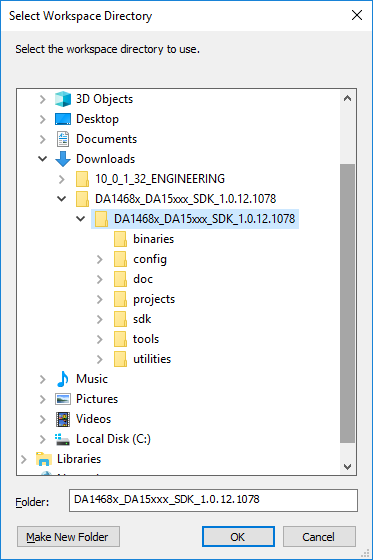
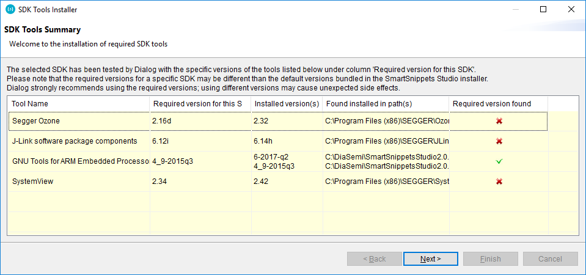
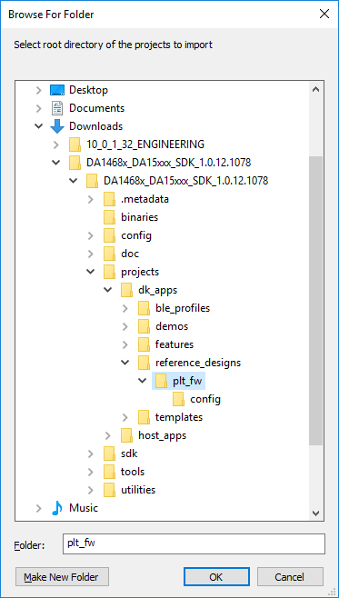
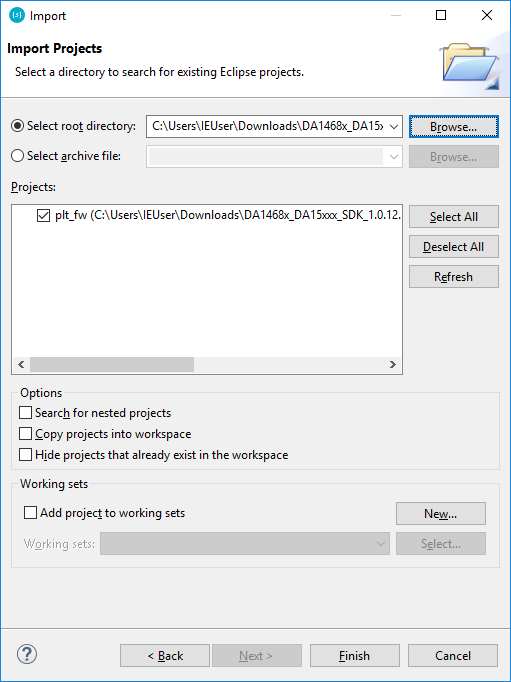
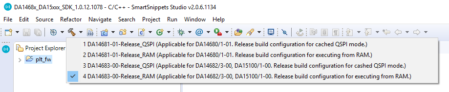
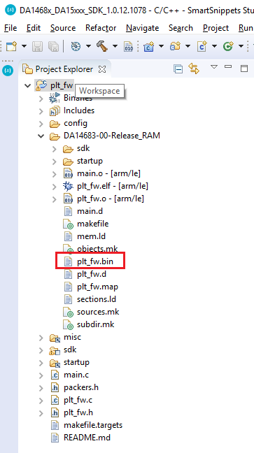
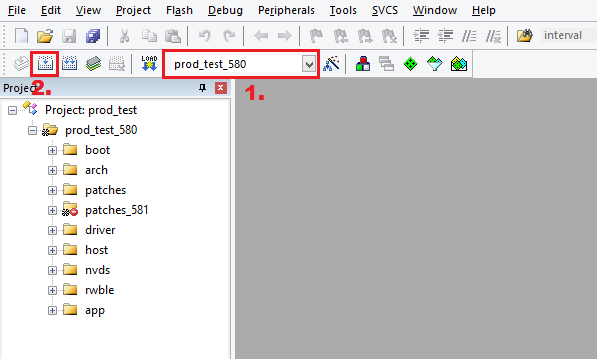
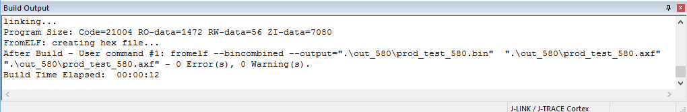

11.6. Appendix A - RF Master firmware¶
11.6.1. RF Master firmware for DA1468x and DA1469x family¶
This section explains how to compile and get binaries for the RF Master tool for the DA1469x and DA1468x family chips: DA1469x-00, DA14681-01, DA14682-00, DA14683-00, DA15000-00, DA15001-00, DA15100-00 and DA15101-00.
- Open SmartSnippets™ Studio and on select workspace pop up press browse and select the root of the chip SDK.

Figure 201 Select SDK root as workspace
- If the SDK tools wizard pop up showing that some tools are required check that at least required version found for GNU Tools for ARM Embedded processors. If found, then close the wizard and proceed. If not, press Next and the installer will guide through the installation of the compiler.

Figure 202 SDK tools wizard
- After successful compiler set up, switch to the C/C++ perspective
- Right click on the Project Explorer view and select Import…. Select General -> Existing projects into workspace and press Next
- On Import projects pop up click browse and select the plt_fw project

Figure 203 Browse for plt_fw project location inside SDK
- Once project recognized press Finish

Figure 204 Import plt_fw project
- Select project and expand the build icon. Click on a Release_RAM build configuration based on the chip.

Figure 205 Build plt_fw project
- Wait for the project to compile. This may take some minutes. Check console view for any errors.
- After successful compilation plt_fw binary resides into projects’ build folder

Figure 206 Browse for plt_fw binary
- For more information on handling SDK projects consult User manual UM-B-057 on SmartSnippets™ Studio installation.
11.6.2. RF Master firmware for DA14580/581/583, DA1453x and DA14585/6 family¶
This section explains how to compile and get binaries for the RF Master tool for the DA14580/581/583 and DA14585/6 family chips: DA14580-01, DA14581-00, DA14583-01, DA14585-00, DA14586-00, DA14531.
For 580/581/583 chips:
- Open Keil IDE and from Main Menu go to File -> Open . On filter combobox select All Files
- Extract DA14580/581/583 SDK and point to
SDK 5.0.4\DA14580/581/583_SDK\5.0.4\projects\target_apps\prod_test\prod_test\Keil_5. Select prod_test.uvprojx. - Press Open and the prod_test project is loaded into Keil workspace.
- Select prod_test_580, prod_test_581 or prod_test_583 from the combobox (1.) and press the build icon (2.)

Figure 207 Keil workspace after prod_test project load
- Wait for the project to compile. Check build_output view for successful compilation.

Figure 208 Compilation messages
- On success, binary location is
SDK 5.0.4\DA14580/581/583_SDK\5.0.4\projects\target_apps\prod_test\prod_test\Keil_5\out_580\prod_test_580.bin - For 585/6 and 531 chips the process is the same as above. Keil project location on the DA14585/6 SDK is
DA145xx_SDK\6.0.14.1114\projects\target_apps\prod_test\prod_test\Keil_5